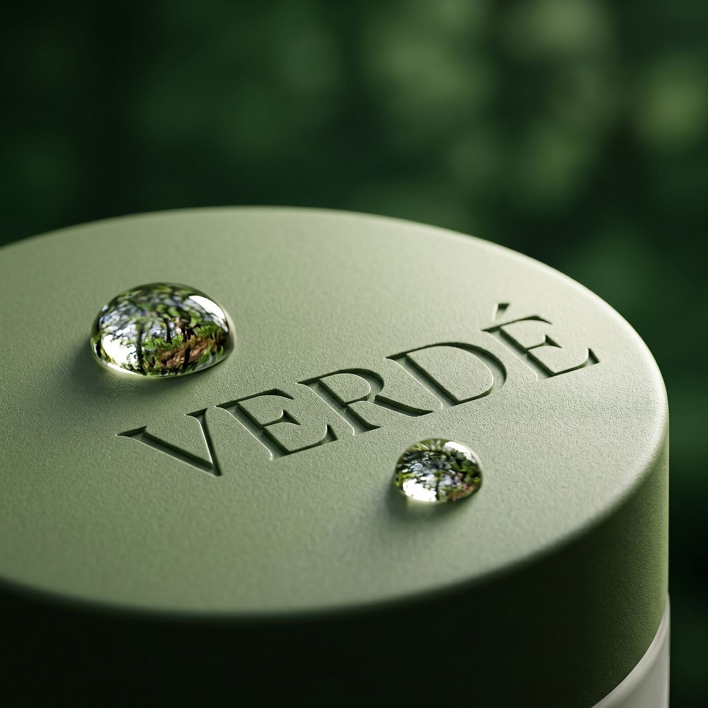
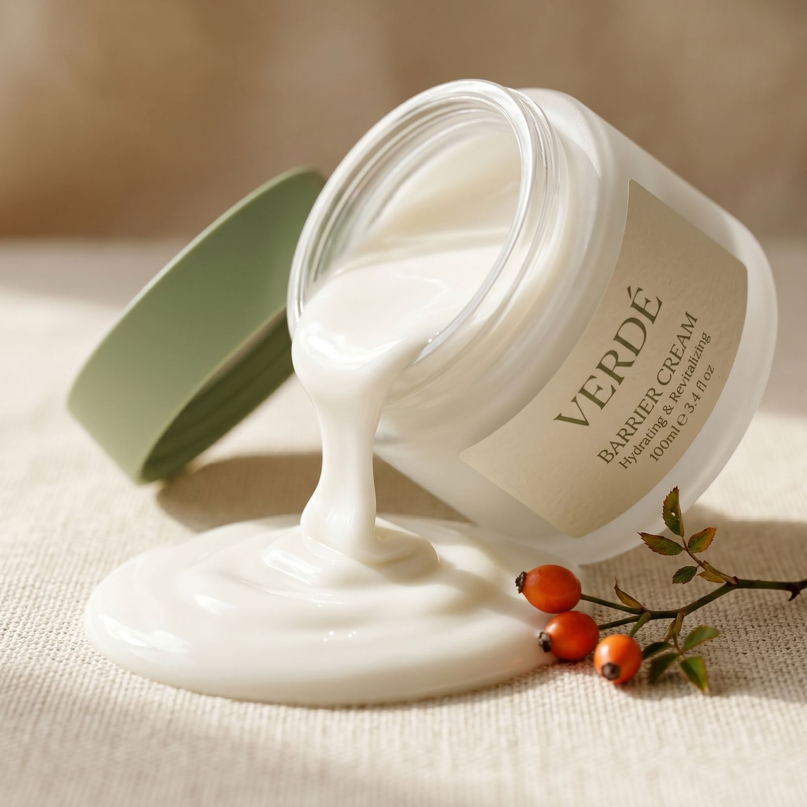
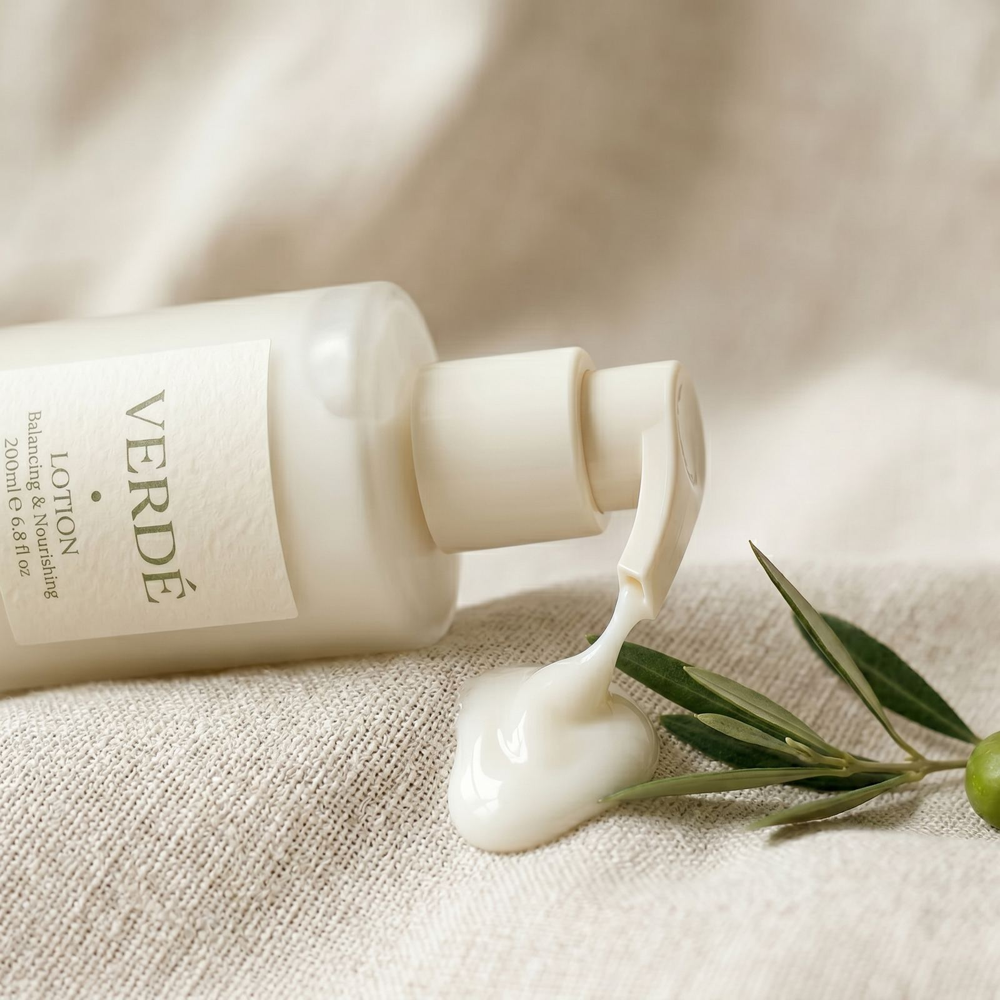

Ingredient Dictionary

성분명을 입력하면 역할, 추출 원료, 민감성 피부 적합도, 그리고 해당 성분이 포함된 제품까지 한번에 확인할 수 있습니다.

손상된 피부 장벽을 진정시키고 재생을 돕는 대표적인 클린 뷰티 성분. VERDÉ TONER와 AMPOULE의 핵심 베이스입니다.

수분을 끌어당겨 피부 표면을 부드럽게 유지하고, 자극받은 피부를 진정시키는 데 도움을 줍니다. AMPOULE과 BARRIER CREAM에 함유.

피부 장벽을 강화하고 칙칙한 톤을 정돈하는 데 도움을 주는 성분. VERDÉ AMPOULE에 병풀과 함께 배합되어 시너지를 냅니다.

비타민 A·C가 풍부해 피부 결을 정돈하고 탄력을 더해주는 식물성 오일. BARRIER CREAM의 마무리감을 책임지는 핵심 오일입니다.

예민하고 트러블이 잦은 피부를 진정시켜주는 전통 약초 성분. VERDÉ TONER에 병풀과 함께 더해 진정 효과를 높였습니다.

폴리페놀 성분이 풍부해 외부 자극으로부터 피부를 보호하고 유수분 밸런스를 잡아주는 성분. VERDÉ LOTION의 핵심 베이스입니다.
고객 문의 데이터를 바탕으로 가장 많이 들어오는 성분 관련 질문을 먼저 정리했습니다.
VERDÉ 전 제품은 병풀, 판테놀 등 진정 성분을 중심으로 설계되어 민감성 피부 적합도 평균 4.5/5 이상입니다. 각 제품 상세페이지의 "민감성 적합도" 항목과 전성분표를 함께 확인해보세요.
대부분의 성분은 사용 가능하나, 개인의 피부 상태와 체질에 따라 다를 수 있습니다. 사용 전 패치 테스트를 권장하며, 자세한 사항은 전문의와 상담 후 사용해주세요.
VERDÉ 제품은 자극이 적은 진정·보습 성분 위주로 구성되어 있어 대부분의 제품과 함께 사용 가능합니다. 다만 고농도 산성 성분과 함께 사용할 경우 사용 순서를 나누어 적용하는 것을 권장합니다.
각 제품 상세페이지의 "전성분표 & 성분별 역할" 항목에서 함량 순서대로 확인할 수 있으며, 핵심 성분의 경우 별도 함량 정보를 함께 표기하고 있습니다.